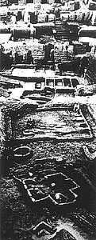

|

Each time a temple was rebuilt the mud-brick walls were knocked down. The remains would form a platform and be used as the foundation for the new building. The remains of the old temple would be buried in the new platform.
When archaeologists excavate platforms like the one at Eridu they find foundations of buildings underneath each other going back through time. |